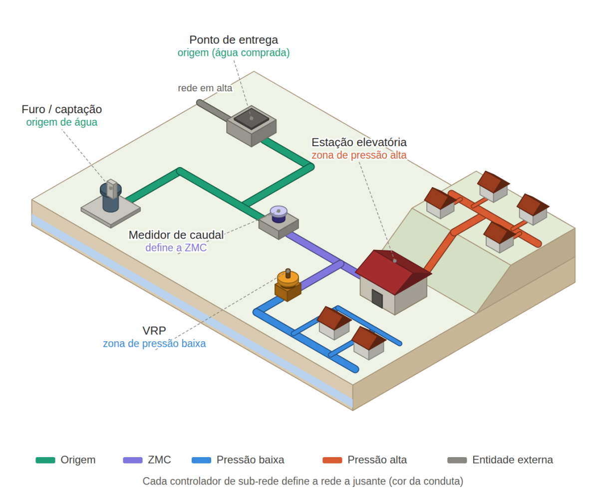
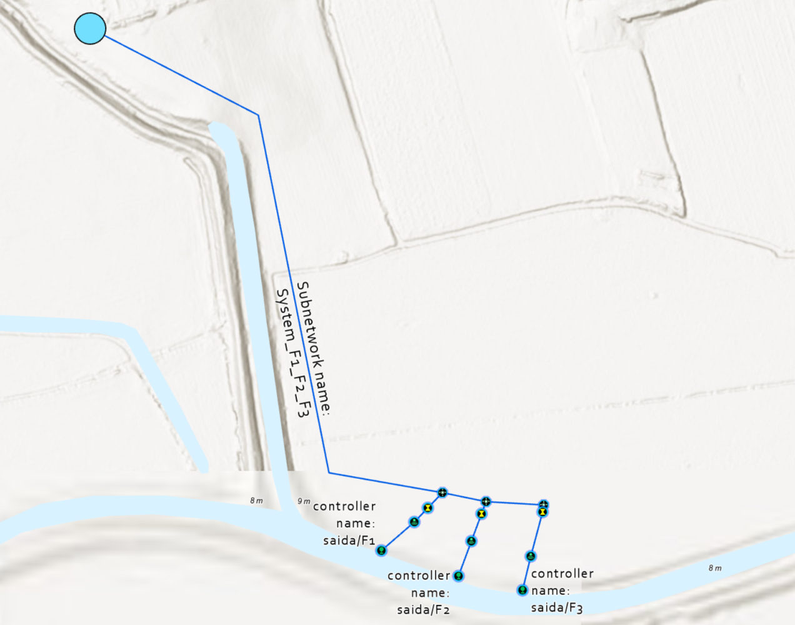
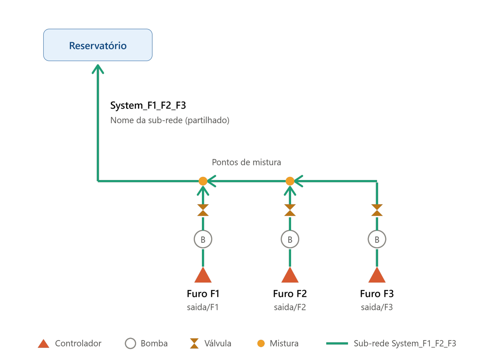

ArcGIS Utility Network: sub-redes multi-controlador em redes de água
Um dos conceitos fundamentais da Utility Network é a possibilidade de subdividir a rede numa estrutura hierárquica de sub-redes (subnetworks), organizada em tiers, que reflita o mais fielmente possível a forma como as entidades gestoras exploram e gerem os seus ativos.
Os exemplos mais comuns são as origens de água (definidas pelos furos/captações ou, quando a água é comprada a outra entidade, pelos pontos de entrega), as zonas de medição e controlo (definidas pelos medidores de caudal) e as zonas de pressão (definidas por órgãos que influenciam a pressão, como VRPs ou estações elevatórias). Cada um destes níveis corresponde normalmente a um tier diferente. Os elementos que delimitam as sub-redes são denominados controladores de sub-rede (subnetwork controllers).

Tipicamente, um controlador origina uma sub-rede, mas nem sempre é assim na realidade
Num sistema de abastecimento de água, é comum a mesma rede ser alimentada por duas ou três captações (furos, poços ou captações superficiais) que injetam água num conjunto comum de adutoras e reservatórios. Na Utility Network, essas captações são controladores que dão origem a uma única sub-rede. O que define esta sub-rede é o nome de sub-rede partilhado pelos controladores. Atribuir a cada furo um nome de controlador diferente, mas o mesmo nome de sub-rede, indica ao modelo que todos alimentam o mesmo sistema, que é exatamente o que acontece no terreno.
Um sistema, várias origens de água
Imagine-se um sistema com três furos, F1, F2 e F3, que bombeiam para a mesma adutora até um reservatório de regularização. A água dos três furos mistura-se ao longo da adutora, à medida que cada um entra, e chega ao reservatório já misturada, seguindo daí para toda a rede de distribuição. Neste exemplo, o tier foi configurado com topologia em malha (mesh), que admite vários controladores por sub-rede. F1, F2 e F3 recebem o mesmo nome de sub-rede, por exemplo System_F1_F2_F3, e o comando Update Subnetwork produz uma única sub-rede (e uma única SubnetLine) que cobre todo o sistema.


A Utility Network permite modelar as sub-redes de forma fiel à realidade da exploração. Uma rede de água raramente tem uma única origem, e a topologia mesh deixa que vários controladores, cada um com o seu nome, alimentem a mesma sub-rede. O nome de sub-rede partilhado é o que diz ao modelo que todos pertencem ao mesmo sistema.
Esta abordagem tem vantagens práticas. A sub-rede passa a representar o sistema tal como é gerido no terreno, os traces e análises refletem as várias origens em simultâneo, e a entrada de um novo furo resolve-se acrescentando um controlador com o mesmo nome de sub-rede, sem reestruturar o modelo. Bem definidos desde a fase de modelação, os controladores de sub-rede tornam-se a base para gerir origens, de forma coerente e sustentável.
Publicado originalmente no LinkedIn a 15 de outubro de 2026.